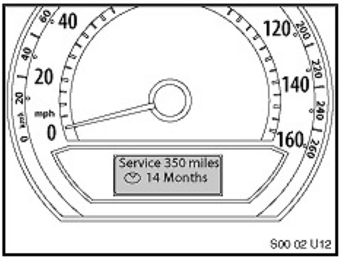
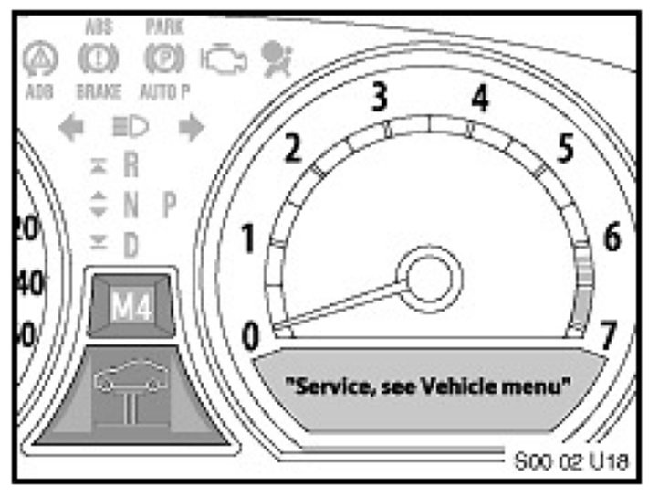
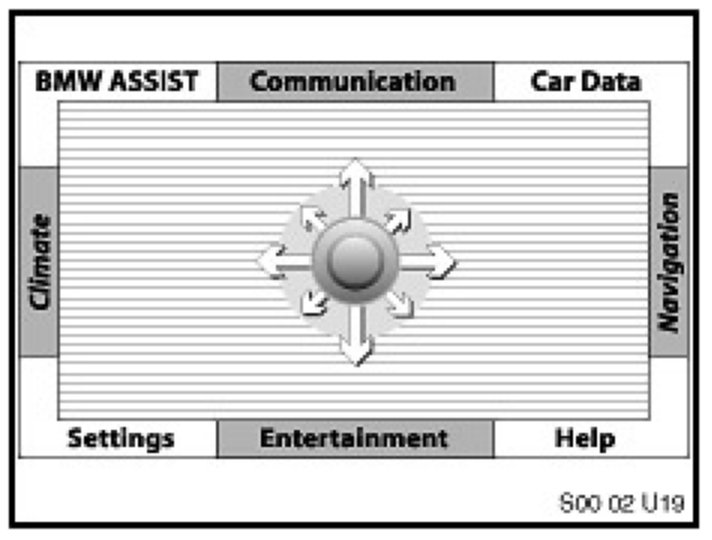
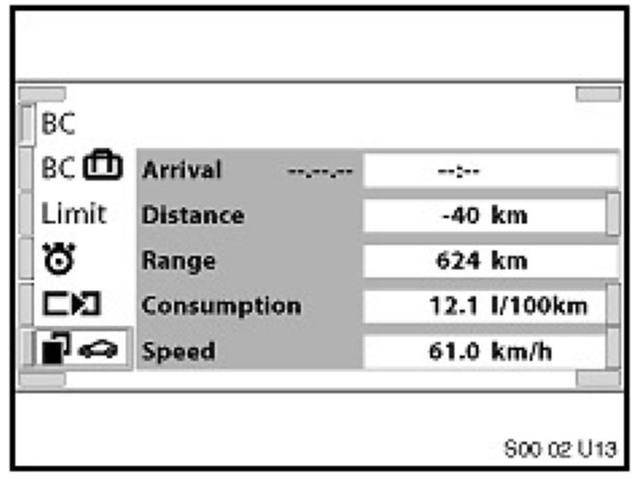
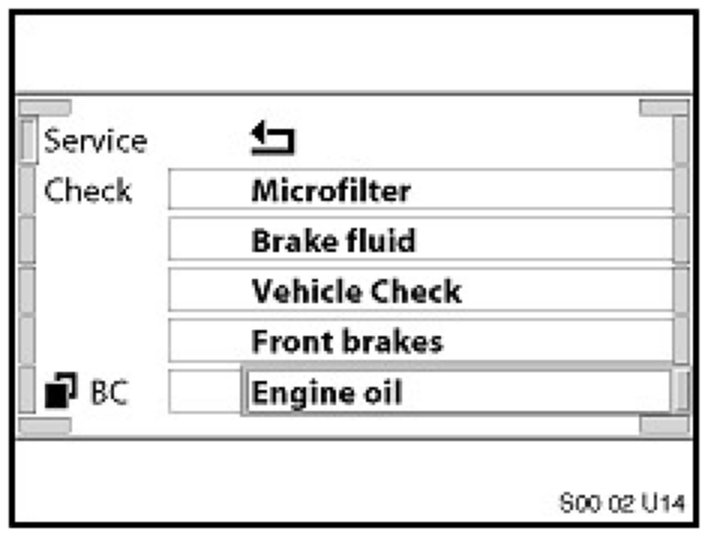

Service Indications
E65 AND E66 SERVICE INDICATION
The service indicators can be displayed in three different locations inside the vehicle:
A. The Service Need Display (SBA) , located in the Instrument Cluster under the Speedometer, is the evolution of the SIA4 Service Interval Display. When ignition (KL15 Terminal) is on, the SBA appears briefly. The first line specifies the mileage range before the next service is due. The second line, displayed by a clock symbol, specifies the time range before the next service is due. If service is overdue, a minus sign ("-") will appear with the overdue mileage or time.

For example:
The next mileage dependant service item is due in 350 miles and the next time dependent service item is due in 14 months.
B. The Check Control Display , located in the Instrument Cluster under the Tachometer.

For example:
If either front or rear brake linings are worn, the following is displayed: "Service, see Vehicle menu" is displayed in Check Control Display: For more detailed information, the user can access the CBS Menu in the Control Display.
The general brake warning lamp and the variable control lamp illuminate in the Instrument Cluster.
The variable control lamp shows the symbol of a car on a lifting platform in the bottom center of the Instrument Cluster.
C. The CBS Menu in the Control Display provides additional information on any required service. The CBS Menu can be accessed by:

Select the "Car Data" menu using the Controller.

After releasing the Controller or returning to the central position, the "On-board Data" menu appears.
Turn the Controller until the Vehicle Symbol (bottom left) is highlighted.
Confirm the selection by pressing the Controller.

Turn the Controller until Service (top left) is highlighted.
Confirm the selection by pressing the Controller.
The CBS menu appears with the service items.
The service items are displayed in three different colors:
1. Green: No service is currently required.
2. Yellow: Service deadline is approaching (please see the above Table: "Yellow" Interval Before Service Is Due).
3. Red: Service deadline has already passed (overdue).
To display the information of a service item, turn the Controller to select the item and confirm the selection by pressing the Controller.